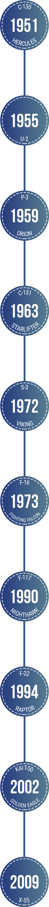

Highlights
Lockheed
-
The Lockheed C-130 Hercules is a four-engine turbopropmilitary transport aircraft designed and built originally by Lockheed Martin. Capable of using unprepared runways for takeoffs and landings, the C-130 was originally designed as a troop, medevac, and cargo transport aircraft. Read more... -
The Lockheed P-3 Orion is a four-engine turbopropanti-submarine and maritime surveillance aircraft developed for the United States Navy and introduced in the 1960s. Lockheed based it on the L-188 Electra commercial airliner. Read more... -

The Lockheed U-2, nicknamed "Dragon Lady", is an American single-jet engine, ultra-high altitudereconnaissance aircraft operated by the United States Air Force (USAF) and previously flown by the Central Intelligence Agency (CIA). Read more... -

The Lockheed C-141 Starlifter was a military strategic airlifter that served with the Military Air Transport Service (MATS), its successor organization the Military Airlift Command (MAC), and finally the Air Mobility Command (AMC) of the United States Air Force (USAF). Read more... -

The Lockheed S-3 Viking is a four-seat, twin-engineturbofan-powered jet aircraft that was used by the U.S. Navyto identify and track enemy submarines. In the late 1990s, the S-3B's mission focus shifted to surface warfare and aerial refueling. Read more... -

The General Dynamics F-16 Fighting Falcon is a single-engine supersonicmultirolefighter aircraft originally developed by General Dynamics (now Lockheed Martin) for the United States Air Force (USAF). Designed as an air superiorityday fighter, it evolved into a successful all-weather multirole aircraft. Read more... -

The Lockheed Martin F-22 Raptor is a fifth-generation, single-seat, twin-engine, all-weather stealth tactical fighter aircraft developed for the United States Air Force (USAF). Read more... -

The Lockheed F-117 Nighthawk is a single-seat, twin-engine stealth attack aircraft that was developed by Lockheed's secretive Skunk Works division and operated by the United States Air Force (USAF). The F-117 was based on the Have Blue technology demonstrator. Read more... -
The KAI T-50 Golden Eagle is a family of South Korean supersonic advanced trainers and light combat aircraft, developed by Korea Aerospace Industries (KAI) with Lockheed Martin. The T-50 is South Korea's first indigenous supersonic aircraft and one of the world's few supersonic trainers. Read more... -
The Lockheed Martin X-55 Advanced Composite Cargo Aircraft (ACCA) is an experimental twinjettransport aircraft. It is intended to demonstrate new air cargo-carrier capabilities using advanced composite material. Read more...
